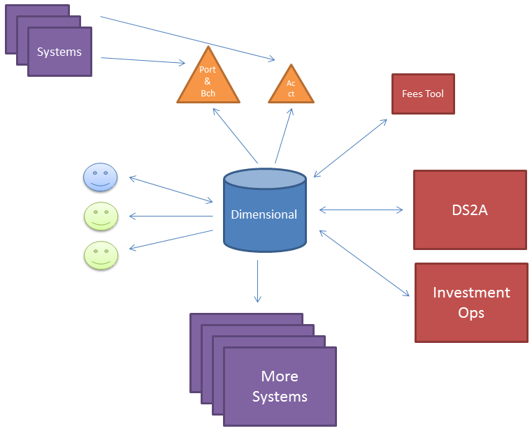
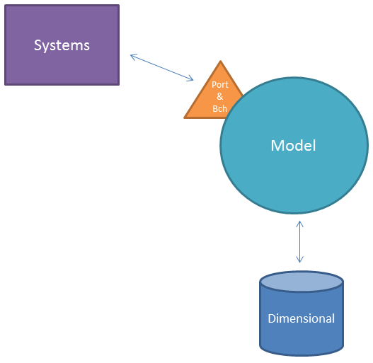
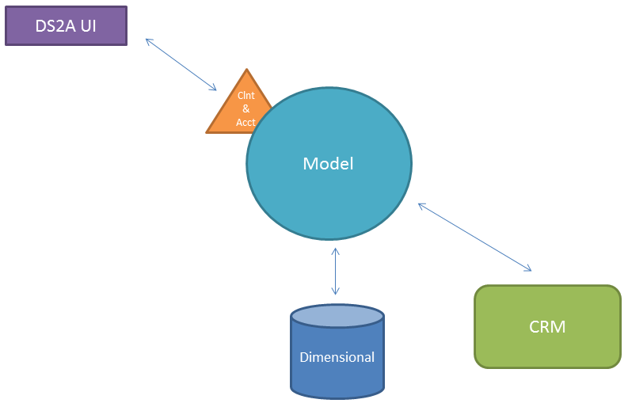

DS2A
Data Source Strategy
What is the vision for Ds2A?
- Fund Ops Only
- All Users
- Don't Know

Dimensional DB must be treated as an independent system.

Web APIs
- Automated Testing
- Automated Deployment
- Code Review Process
Vehicle Portfolio Master
Vision
Authoritative source of Vehicles, Portfolio, and Benchmarks.
Consolidate business rules around Vehicles, Portfolio, and Benchmarks into a single system : VPM.
2017 Goals
- Mature Engineering Standards
- Authoritative Source for Benchmarks - Q1
- Authoritative Source for Portfolios - ??
Benchmark Technical Strategy

80% of the code will be in C#